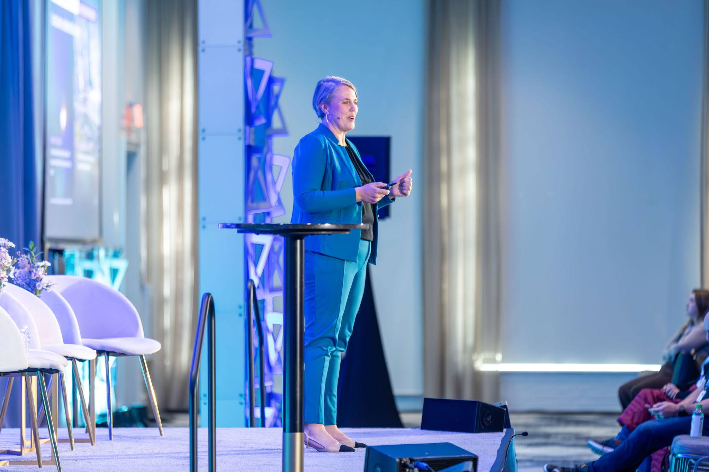

About Polly
Polly Allen is a software developer turned product leader who has built AI products for decades, including search, predictive analytics, and generative AI. She wrote code at startups, led engineering teams at Amazon, and ran product at Elsevier.
Back at Amazon, she led the 26-person team that launched Alexa's first generative AI answers in 2020.
She studied system safety at MIT under Nancy Leveson, co-authoring research on the STAMP methodology applied to military automation failures — the same framework that now underpins the Trust Continuum.
Today she runs AI Career Boost, where she has trained more than 1,500 product leaders to build with AI, and she hosts the AI Product Leader podcast.
The Framework
In 2001, Polly was a visiting researcher at MIT's Department of Aeronautics and Astronautics, working with Nancy Leveson — the author of Safeware and the creator of the STAMP methodology for analyzing system safety. Their research examined how automation failures in military systems led to friendly-fire incidents, tracing the root causes to breakdowns in human-machine trust.
Twenty years later, building generative AI products at Amazon and training product leaders through AI Career Boost, she kept seeing the same failure patterns. Automation surprise. Mode confusion. Authority confusion. Complacency. Brittle automation. The accidents were different, but the trust breakdowns were identical.
The Trust Continuum maps those failure modes to five rungs of AI autonomy — Answer, Assist, Recommend, Act and report, Act within limits — with gate questions at every step. It's been delivered at McKinsey, Microsoft, PayPal, DataConnect (700+ attendees), and Product Leader Summit (session NPS 68).
Podcast
65+ episodes with the practitioners building AI products — not the hype, the work.
Every episode is a 45-minute conversation with a real AI practitioner — CPOs, engineering leads, researchers, and founders who are building the products, not just talking about them.
The podcast is where Polly's network, her research, and her pattern-matching happen in public. Conference organizers, bureaus, and potential collaborators listen to these episodes to understand how she thinks.
Guest appearances: Grand Slam Journey, The Future of Content, Product Talk, and more.
Affiliations
CWI Labs Board Member — Center for Workforce Inclusion, focused on equitable access to AI-era employment. Through Gary Officer and workforceinclusion.org.
Futurist.com Think Tank Member — Listed as a generative AI keynote speaker since January 2023.
Reforge Expert — Contributing expert on AI product development.